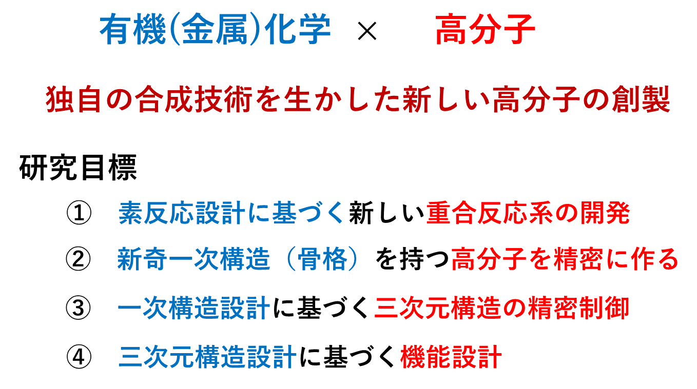
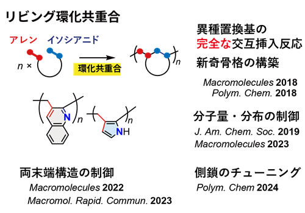
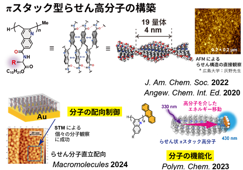
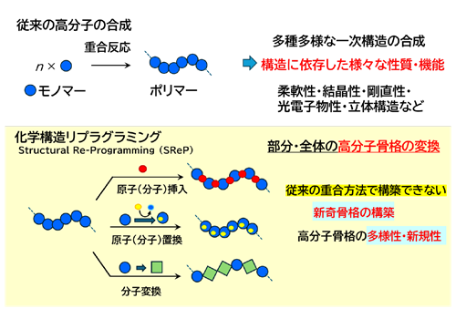
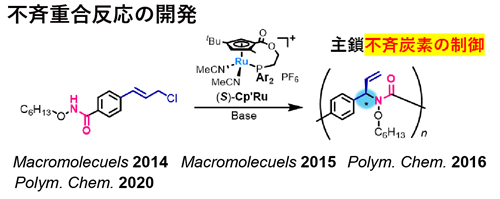
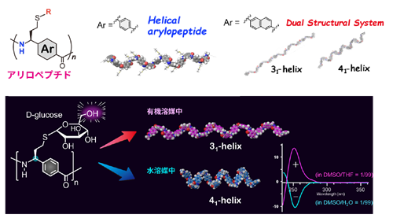

Top Page Members Research Publication Photo Access Links
高分子の物性や機能は、その主鎖構造に大きく影響するため、新たな高分子材料の創製を目的として多様な合成法の開発が進められています。我々は、有機化学・有機金属化学を基盤とした素反応開発と精密重合の展開を通じ、独自の合成技術を生かした新奇骨格の構築およびその三次元構造の制御・機能化に取り組んでいます。





